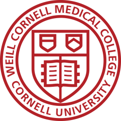

|
|
Employment |
|
2016– |
Director of Innovative Technologies Director of the MATTER Lab Mind-Assisting Technologies for Therapy, Education, and Research Senior Research Scientist and Healey Scholar Child Mind Institute (Manhattan, NY)
— Building open-source software infrastructure, informatics, and Interfaces for language and mental health assisting platforms — Created the end-to-end encrypted MindLogger platform (mindlogger.org) for building data collection, assessment, and intervention mobile/web apps. — Built hundreds of mental health and other assessments in MindLogger — Designed protocols to collect speech and actigraphy data from thousands of participants as part of the Health Brain Network study — Prototyped journaling and augmented reality apps now in app stores — Patented wearable devices for gesture recognition and respirometry |
|
2014–2016 |
Principal Scientist of Systems Biology Director of Neuroimaging Sage Bionetworks (Seattle, WA)
— Mobile health research app development with Apple (HealthKit) — mPower app, used in the world’s largest Parkinson study — Feature extraction from mobile phone sensor data — Open science crowdsourced data analysis contests |
|
2012–2013 |
Research Assistant Professor Department of Psychiatry and Behavioral Science Stony Brook University (Stony Brook, NY)
— Research on imaging biomarkers of depression and PTSD — Co-taught brain imaging courses |
|
2007–2012 |
Assistant Professor of Clinical Neurobiology Division of Molecular Imaging and Neuropathology Department of Psychiatry, New York State Psychiatric Institute Columbia University (Manhattan, NY)
— Research on brain image processing, registration, and labeling — Open-source brain morphometry software (mindboggle.info) |
|
2004–2007 |
Information Synthesis Theorist and Program Analyst Parsons Institute for Information Mapping The New School (Manhattan, NY)
— Complex data visualization and information visualization — Construction of visualization ontologies |
|
2004–2005 |
Research Scientist Department of Psychiatry Columbia University (Manhattan, NY)
— Detection of biomarkers of disease in brain MRI data |
|
|
Education |
|
 1998–2005 |
Weill Medical College of Cornell University (Manhattan, NY) Functional MRI Laboratory, Memorial Sloan-Kettering Cancer Center Functional MRI Research Center, Columbia University Ph.D. in Neuroscience, May, 2004 Thesis: Automated brain labeling with Mindboggle
— Invented open-source Mindboggle software to automate anatomical labeling of human brain MRI data — Simple mindreading based on task-evoked fMRI activity |
|
1996–1998 |
California Institute of Technology (Pasadena, CA) Computation and Neural Systems Program
— Brain tissue optics research: 2-photon microscopy and light-based uncaging of molecules — Biophysical computer modeling of light propagation |
|
1994–1996 |
Massachusetts Institute of Technology (Cambridge, MA) Spatial Imaging Group, MIT Media Laboratory M.S. in Media Arts and Sciences, September 1996 Thesis: Dispersion Compensation for Reflection Holography
— Dispersion correction for holographic view stations: World’s deepest dispersion-controlled viewing stations World’s thinnest edge-lit holograms — Computer animation for an electronic-holography display — Later published a general raytracing equation for holograms |
|
1991–1993 |
University of Michigan (Ann Arbor, MI) B.S. in Biopsychology, Perception and Cognition Studies, May 1993
— Research assistant in the Kellogg Eye Institute — Independent computer-generated holography research |
|
1990–1991 |
Waseda University (Tokyo, Japan) Japanese studies International Division (Kokusaibu)
— Autostereoscopic holography research (Tama Art College) |
|
1988–1990 |
University of Southern California (Los Angeles, CA) Resident Honors Program scholar
— Research assistant in Hedco Neurosciences — Independent display holography projects |